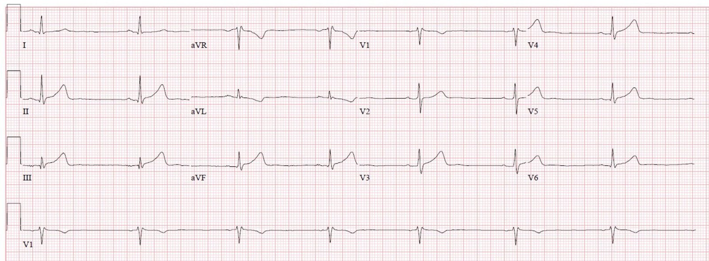
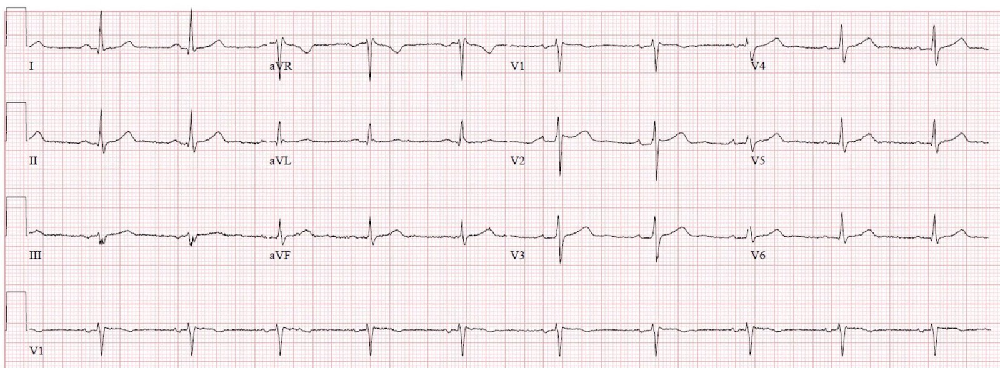
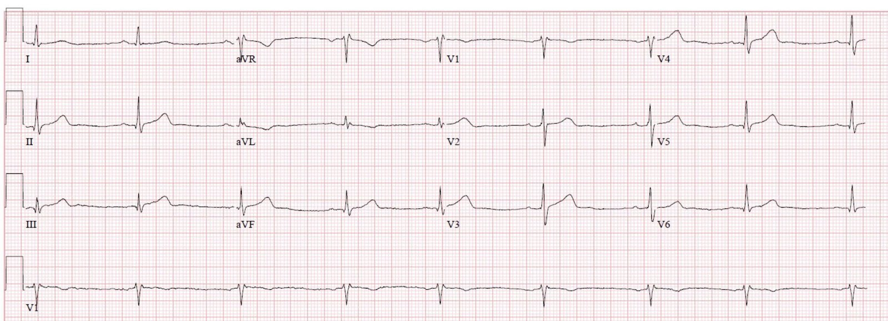
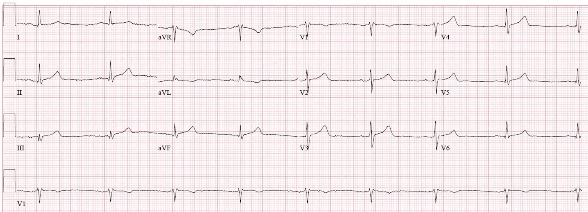
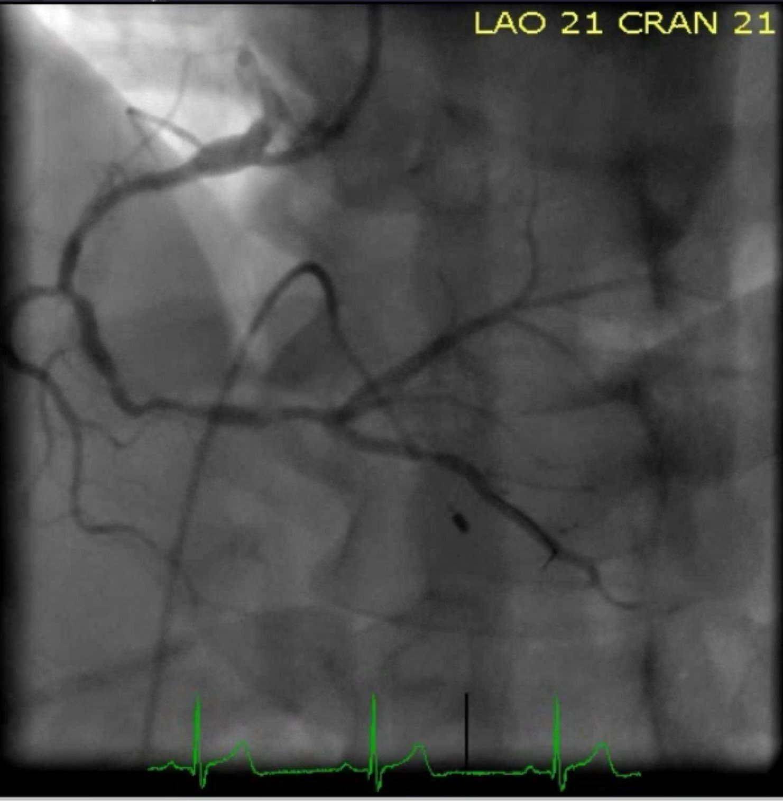
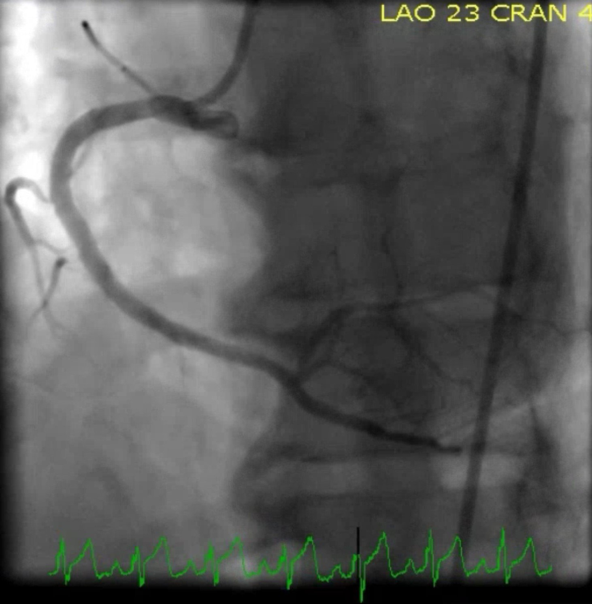
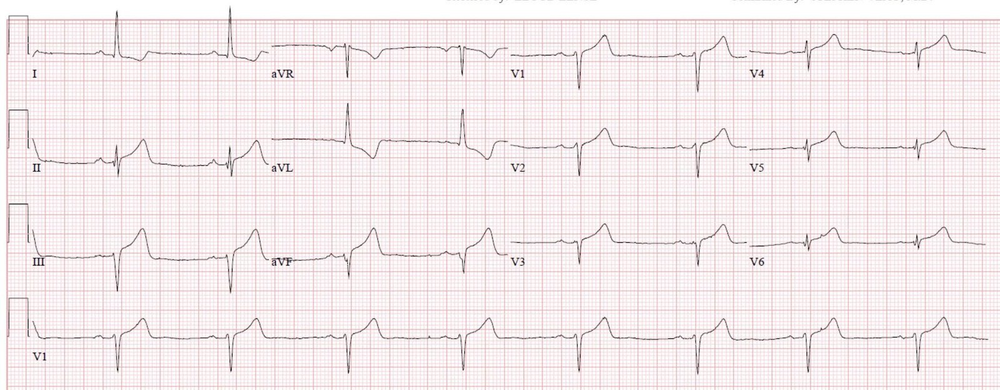
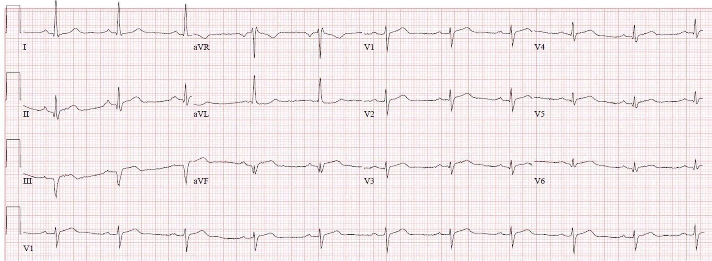
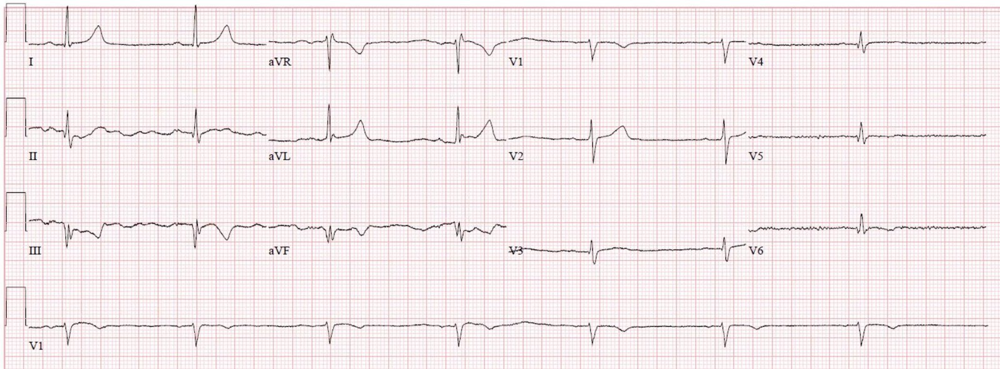
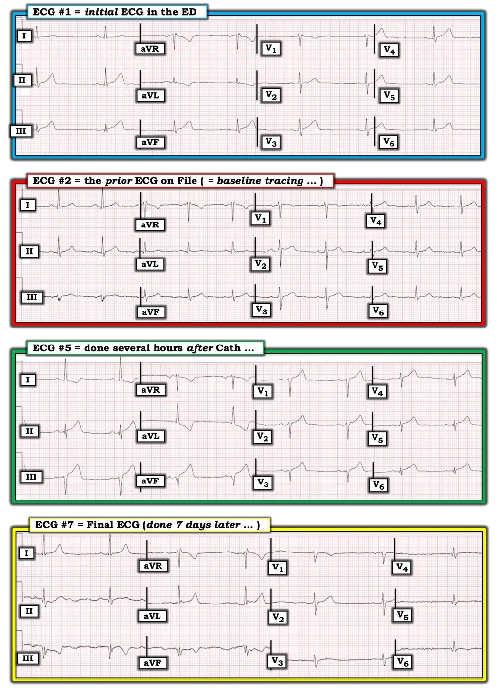

20/11/2019 — Một người đàn ông 30 mấy tuổi đau ngực 12 giờ; điện tâm đồ có phù hợp với 12 giờ tắc mạch không?
Bản dịch tiếng Việt của bài "A man in his 30s with 12 hours of chest pain; is the ECG consistent with 12 hours of occlusion?" – Dr. Smith’s ECG Blog. Giữ nguyên toàn bộ 12 hình ảnh của bản gốc.
Viết bởi Pendell Meyers, gửi bởi Siva Vittozzi-Wong
Một người đàn ông 30 mấy tuổi có tiền sử tăng huyết áp, rối loạn lipid máu và đái tháo đường đến khám vì đau ngực khởi phát 12 giờ trước khi nhập viện. Cơn đau được mô tả là cảm giác đè nặng, liên tục suốt 12 giờ, lan lên hàm, kèm tê tay trái. Dấu hiệu sinh tồn ban đầu đáng chú ý có nhịp chậm 45 nhịp/phút.
Đây là điện tâm đồ lúc nhập viện của bệnh nhân, khi đang đau:


Đây là điện tâm đồ cũ có trong hồ sơ:


Bác sĩ nội trú cấp cứu (người đã nghe tôi giảng về sóng T tối cấp, OMI kín đáo, v.v.) đã ghi lại diễn giải sau:
“Điện tâm đồ ban đầu cho thấy sóng T tối cấp ở các chuyển đạo dưới, đặc biệt là chuyển đạo III. Những dấu hiệu này gợi ý tắc RCA, được củng cố thêm bởi nhịp chậm do thiếu máu cục bộ nút SA. So với điện tâm đồ cũ trong hồ sơ, đây đều là những dấu hiệu mới.”
Bình luận của Meyers: Thật đáng tự hào. Hoàn toàn chính xác. Sóng T tối cấp thành dưới, kèm sóng T tối cấp âm ở aVL. Các chuyển đạo bên cũng có ST chênh lên rất nhẹ và sóng T tối cấp. Ngay cả khi không có điện tâm đồ nền, tôi vẫn cho rằng sóng T tối cấp thành dưới vẫn đủ để chẩn đoán. Khi có điện tâm đồ nền trong tay, mọi thứ dễ hơn nhiều và giá trị chẩn đoán cao hơn nhiều, và bạn có thể thấy các chuyển đạo bên rõ ràng cũng tối cấp. Cần lưu ý, các chuyển đạo dưới thực ra có thể có ST chênh lên vừa sát ngưỡng tiêu chuẩn – chỉ hơi thiếu một chút để đủ trọn 1 mm ở hai chuyển đạo liên tiếp, và tôi tin rằng gần như mọi bác sĩ tim mạch tôi từng gặp đều sẽ nói rằng nó không đạt tiêu chuẩn.
Sau khi xem điện tâm đồ này, bác sĩ nội trú lập tức gọi hội chẩn cấp cứu để bày tỏ lo ngại về tắc RCA cấp. Kết quả troponin ban đầu chưa có. Khoa tim mạch nhanh chóng đánh giá bệnh nhân và không khuyến cáo kích hoạt phòng thông tim. Mặc dù bệnh nhân vẫn đang đau, có vẻ như điều họ quan tâm nhất là việc bệnh nhân đã đau liên tục 12 giờ và không đạt tiêu chuẩn STEMI.
Bình luận của Meyers: Theo điện tâm đồ thì KHÔNG hề có 12 giờ nhồi máu cơ tim do tắc kéo dài! Bản ghi này cho thấy “mức độ cấp tính (Acuteness)“ rất rất cao, không có sóng Q đáng kể và có sóng T tối cấp. Lượng cơ tim còn cứu được là tối đa! Như chúng tôi đã nói nhiều lần trên blog này, điện tâm đồ tốt hơn rất rất nhiều so với triệu chứng do bệnh nhân kể trong việc xác định thời gian kéo dài và điều kiện cứu vớt cơ tim.
Đúng như điện tâm đồ gợi ý, troponin đầu tiên trả về mức không phát hiện được (vì chưa có đủ 2-6 giờ tắc mạch để xét nghiệm troponin T thế hệ hiện hành của chúng tôi phát hiện ra). Bệnh nhân được nhập khoa tim mạch theo chỉ định của khoa tim mạch.
Troponin lần thứ hai cũng không phát hiện được. Troponin T lần thứ ba trả về dương tính ở mức 0,10 ng/mL. Bắt đầu truyền heparin liên tục. Không có điện tâm đồ nào vào thời điểm này. Troponin lần thứ tư và thứ năm tiếp tục tăng lên 0,19 và 0,26 ng/mL; trong thời gian này chúng tôi không biết bệnh nhân có còn đau hay không. Sau đó một điện tâm đồ được ghi lúc 4 giờ sáng:


Một điện tâm đồ khác được ghi lúc 8 giờ sáng (hồ sơ vẫn không ghi nhận bệnh nhân có còn đau hay không):


Sau khi troponin tăng lên 0,60 ng/mL, không chỉ định thêm xét nghiệm troponin nào nữa.
Cuối cùng bệnh nhân cũng được chụp mạch vành và phát hiện:
Các tổn thương thủ phạm ở RCA đoạn giữa và đoạn xa, mỗi tổn thương hẹp 95% (không ghi nhận dòng chảy TIMI), và bệnh nhân được đặt 4 stent ở RCA. Ngoài ra còn có bệnh động mạch vành (CAD) không cấp tính ở LAD (hẹp 60%).
Dưới đây là các hình ảnh thông tim. Hãy chú ý đến bản ghi điện tâm đồ màu xanh lá ở phía dưới mỗi hình:




Dải nhịp cho thấy ST chênh lên lớn kèm sóng T tối cấp. Mặc dù trên phim chụp mạch không thấy tắc rõ ở thân chính RCA, điều này có nghĩa là một nhánh bên hẳn đã bị tắc trong quá trình can thiệp, hoặc một lượng lớn mảng xơ vữa đã trôi gây thuyên tắc xuống các mạch máu phía hạ lưu.
Như chúng tôi vẫn luôn nói, điện tâm đồ vượt trội hơn chụp mạch vành trong việc xác định tình trạng tưới máu mô thực sự.
Biên bản thông tim không có bình luận nào về các biến cố bất lợi có thể xảy ra do can thiệp, không ghi nhận ST chênh lên mới xuất hiện trong thủ thuật. RCA được ghi nhận có dòng chảy “TIMI 3” sau thủ thuật.
Một điện tâm đồ được ghi vài giờ sau đó:


Điều thú vị là không có hành động nào được thực hiện vào lúc này. Tôi nghi rằng điều này có nghĩa là họ đã biết có gì đó bị tắc trong lúc thông tim và đơn giản là không thể xử lý được. Nếu họ không nhận ra điều đó trong lúc thông tim, thì điện tâm đồ này lẽ ra đã khiến họ đưa bệnh nhân quay lại để tìm tình trạng hẹp trong stent tức thì của stent mới, nhưng họ đã không đưa bệnh nhân trở lại phòng thông tim, nên tôi phải suy ra rằng ngay từ đầu họ đã hiểu chuyện gì đã xảy ra.
Vào lúc đó không chỉ định thêm xét nghiệm troponin nào.
Vào ngày thứ 3, bệnh nhân được ghi một điện tâm đồ khác:


Một điện tâm đồ khác 7 ngày sau:


Diễn biến của bệnh nhân trong bệnh viện có vẻ không có biến chứng. Bệnh nhân được xuất viện mà không có thêm biến cố nào.
Những điểm cần học:
Với sự đào tạo đúng đắn, các bác sĩ và bác sĩ nội trú cấp cứu (và bất kỳ ai có đôi mắt và một bộ óc cởi mở với những ý tưởng mới!) có thể vượt trội hơn cả những ê-kíp tim mạch hoàn chỉnh trong việc phát hiện OMI, trong khi chúng ta vẫn còn mắc kẹt trong kỷ nguyên STEMI / NSTEMI.
Hãy luyện mắt để nhận ra sóng T thành dưới trong ca này là tối cấp, và nhận ra dấu hiệu soi gương của chúng ở aVL.
Đọc điện tâm đồ ở mức chuyên gia tốt hơn triệu chứng do bệnh nhân kể trong việc xác định khả năng sống của cơ tim trong OMI.
Đọc điện tâm đồ ở mức chuyên gia tốt hơn chụp mạch vành trong việc xác định mức độ thành công thực sự của điều trị tái tưới máu trong OMI. (xem y văn bên dưới)
Dưới đây là một số y văn cũ hơn nhưng rất thú vị về độ tưới máu cơ tim TIMI (TIMI myocardial perfusion grade) và hồi phục đoạn ST:
1. Claeys MJ, Bosmans J, Veenstra L, và cs. Determinants and prognostic implications of persistent ST-segment elevation after primary angioplasty for acute myocardial infarction: importance of microvascular reperfusion injury on clinical outcome. Tạp chí Circulation 1999;99(15):1972-7.
2. Gibson CM, Cannon CP, Murphy SA, và cs. Relationship of TIMI myocardial perfusion grade to mortality after administration of thrombolytic drugs. Tạp chí Circulation 2000;101(2):125-30.
3. Shah A, Wagner GS, O’Connor CM, và cs. Prognostic implications of TIMI flow grade in the infarct related artery compared with continuous 12-lead ST-segment resolution analysis. Reexamining the “gold standard” for myocardial reperfusion treatment. Tạp chí J Am Coll Cardiol 2000;35(3):666-72.
4. van’t Hof AW, Liem A, de Boer MJ, và cs. Clinical value of 12-lead electrocardiogram after successful reperfusion therapy for acute myocardial infarction. Zwolle Myocardial Infarction Study Group. Tạp chí Lancet 1997;350(9078):615-9.
5. van’t Hof AW, Liem A, Suryapranata H, và cs. Angiographic assessment of myocardial reperfusion in patients treated with primary angioplasty for acute myocardial infarction: myocardial blush grade. Zwolle Myocardial Infarction Study Group. Tạp chí Circulation 1998;97(23):2303-6.

===================================
BÌNH LUẬN CỦA TÔI, bởi KEN GRAUER, MD (20/11/2019):
===================================
Chúng tôi xin CẢM ƠN Dr. Siva Vittozzi-Wong vì đã chia sẻ ca bệnh sâu sắc này! — cùng phần bàn luận XUẤT SẮC của Dr. Meyers về các dấu hiệu trên các điện tâm đồ liên tiếp và các biến cố trong ca này. Tôi tập trung bình luận vào 4 trong số 7 bản ghi được trình bày ở trên, chú trọng vào một số khái niệm nâng cao được chọn lọc trong việc đọc điện tâm đồ.
- Sẽ DỄ HƠN để có được cái nhìn tổng thể về các dấu hiệu điện tâm đồ trong ca này khi đặt các bản ghi liên tiếp cạnh nhau — điều tôi đã làm trong Hình 1. Để cho rõ ràng — tôi đã đánh số các điện tâm đồ theo trình tự chúng được ghi.


Biểu hiện Lâm sàng — Bệnh nhân là một người trưởng thành trẻ tuổi (30 mấy tuổi) — nhưng có tiền sử tăng huyết áp, rối loạn lipid máu và đái tháo đường (sự kết hợp này rõ ràng có thể khiến bệnh nhân dễ mắc bệnh mạch vành sớm). Bệnh nhân đến khám vì đau ngực mới xuất hiện — đã bắt đầu ~12 giờ trước khi bệnh nhân đến khoa cấp cứu. Bệnh nhân vẫn còn đau ngực đáng kể vào thời điểm ghi điện tâm đồ #1.
Bình luận về điện tâm đồ #1 — Mặc dù có một điện tâm đồ cũ trong hồ sơ — điều TỐT NHẤT (theo ý kiến của tôi) là không xem “điện tâm đồ nền” cho đến sau khi bạn đã đọc xong bản ghi ban đầu ở khoa cấp cứu, và sau khi bạn đã hình thành nhận định lâm sàng về việc bạn sẽ xử trí NHƯ THẾ NÀO NẾU không có sẵn bản ghi nền.
- Tôi hoàn toàn đồng ý với các điểm Dr. Meyers đã nêu — và sẽ bổ sung một vài ý. Diễn giải Hệ thống của tôi như sau:
- Phân tích mô tả điện tâm đồ #1 — Có nhịp chậm xoang khá rõ rệt & loạn nhịp xoang (tần số khoảng ~45-50/phút) — mọi khoảng (PR/QRS/QTc) và trục mặt phẳng trán đều bình thường — không có lớn buồng tim.
- Về Thay đổi Q–R–S–T — Có sóng Q nhỏ, hẹp ở nhiều chuyển đạo (có thể trừ sóng Q ở chuyển đạo III – sóng này thực sự tương đối lớn nếu xét đến biên độ rất nhỏ của phức bộ QRS ở chuyển đạo này). Điều này thực sự quan trọng: cần ghi nhận sự hiện diện và kích thước tương đối của các sóng Q này khi đọc điện tâm đồ — vì những thay đổi liên tiếp trên các bản ghi về sau!
- Khi chuyển sang “Tăng tiến sóng R” — Lưu ý phức bộ rSr’ ở chuyển đạo V1 với thành phần âm nhỏ của sóng T ở chuyển đạo này + hình dạng QRS trông rất giống PQRST ở chuyển đạo aVR (và khá khác với PQRST ở chuyển đạo V2). Tôi nghi ngờ có đặt sai vị trí (đặt cao 1 hoặc 2 khoang liên sườn) của điện cực chuyển đạo V1. Điều này thực sự có liên quan — vì chúng ta sắp đánh giá bệnh nhân có thay đổi ở các chuyển đạo dưới này về khả năng kèm tổn thương thành sau — việc này trở nên khó hơn nếu điện cực chuyển đạo V1 bị đặt sai vị trí …
- Tiếp theo, ở điện tâm đồ #1 có chuyển tiếp đột ngột — với biên độ sóng R bằng biên độ sóng S ngay từ chuyển đạo V2. Điều này thực sự có liên quan — vì vùng chuyển tiếp sớm là một dấu hiệu của tổn thương thành sau cấp.
- Những thay đổi chính đáng quan tâm (như Dr. Meyers đã mô tả rất tinh tường) — liên quan đến thay đổi sóng ST–T. KHÔNG thể có chút nghi ngờ nào rằng ST chênh lên 1 mm tại điểm J + sóng T tối cấp (đáy rộng + đỉnh to và rộng) ở từng chuyển đạo dưới phản ánh một thay đổi cấp tính — được xác nhận về mặt lâm sàng bởi ST chênh xuống soi gương dạng hình soi gương (mirror-image) mà ta thấy ở chuyển đạo aVL.
- Theo Dr. Meyers — các sóng ST-T có hình dạng tương tự ở các chuyển đạo V3 đến V6 cũng phản ánh một thay đổi tối cấp (với cả sóng T to hơn, nhọn + một mức ST chênh lên nhỏ nhưng chắc chắn).
- Cuối cùng — đoạn ST thẳng quá mức ở chuyển đạo V2 là không bình thường (tức là, bình thường đoạn ST ở chuyển đạo này phải dốc lên từ từ). Trong bối cảnh nhồi máu cơ tim thành dưới cấp + ST chênh lên ở các chuyển đạo ngực bên (và chuyển đạo V1 đặt sai vị trí) — với tôi, điều này gợi ý có kèm tổn thương thành sau cấp.
Nhận định lâm sàng về điện tâm đồ #1: Theo Dr. Meyers và Dr. Vittozzi-Wong — điện tâm đồ #1 có giá trị chẩn đoán tắc RCA cấp cho đến khi chứng minh được điều ngược lại — không cần xác nhận bằng kết quả troponin huyết thanh, và không cần bản ghi cũ để so sánh.
- Bình luận của tác giả — Tôi thấy khó tin rằng một bác sĩ tim mạch, sau khi đã khám bệnh nhân này, lại nói rằng không có chỉ định thông tim cấp ở một người đàn ông trẻ, hoàn toàn khỏe mạnh về chức năng, có đau ngực mới xuất hiện (và đang tiếp diễn), với những thay đổi điện tâm đồ mà ta thấy ở điện tâm đồ #1.
Bình luận về điện tâm đồ #2 — Theo Dr. Meyers — Việc xem lại điện tâm đồ cũ của bệnh nhân này đã xác nhận rằng các thay đổi sóng ST-T đáng lo ngại ở điện tâm đồ #1 thực sự là cấp tính. Điều này lẽ ra phải “củng cố vững chắc” chỉ định thông tim kịp thời.
- Tần số tim trên bản ghi cũ nhanh hơn (60-65/phút). Điều này gợi ý rằng nhịp chậm rõ rệt ở điện tâm đồ #1 thực sự là một phần của bệnh cảnh cấp tính!
- Mặc dù có ST chênh lên nhẹ ở một số chuyển đạo trên bản ghi cũ — sóng T tối cấp ở các chuyển đạo II, III, aVF và V3 đến V6 chắc chắn không có ở điện tâm đồ #2 — và hoàn toàn không có ST chênh xuống ở chuyển đạo aVL. Đoạn ST dẹt ở chuyển đạo V2 của điện tâm đồ #1 cũng không có trên bản ghi cũ.
- Điều thú vị là — sóng q nhỏ đã thấy ở một số chuyển đạo trên bản ghi cũ, vì vậy rõ ràng đây không phải là một dấu hiệu mới. Mặc dù trước đây không thấy sóng Q ở chuyển đạo III — sóng S phân mảnh ở chuyển đạo này khiến ta không thể coi sóng Q ở chuyển đạo III của điện tâm đồ #1 là một dấu hiệu cấp tính.
- ĐIỀU CỐT LÕI — Với bệnh sử đau ngực mới xuất hiện, KHÔNG thể có chút nghi ngờ nào rằng nhịp chậm rõ rệt + các thay đổi sóng ST-T tối cấp lan tỏa ở điện tâm đồ #1 là cấp tính.
Bình luận về điện tâm đồ #5 — Chúng tôi được biết điện tâm đồ #5 được ghi “vài giờ sau đó” sau thông tim. Ngay cả khi đợt ST chênh lên trên phim thông tim không được để ý — tôi vẫn nghĩ rằng điện tâm đồ tiếp theo trong ca này lẽ ra phải được ghi sớm hơn nhiều sau thông tim chứ không phải “vài giờ sau đó”.
- Tôi thấy thú vị khi so sánh điện tâm đồ #1 với điện tâm đồ #5. Có sự dịch chuyển rõ ràng của trục mặt phẳng trán — gần như đạt tiêu chuẩn của một LAHB (thông thường, để chẩn đoán LAHB thì sóng S ở chuyển đạo II phải sâu hơn mức ta thấy ở điện tâm đồ #5) mới.
- Những thay đổi rõ ràng ở điện tâm đồ #5 — là sóng T tối cấp rõ rệt với ST chênh lên tăng đáng kể ở các chuyển đạo dưới và gần như tất cả các chuyển đạo ngực trước tim + ST chênh xuống soi gương dạng hình soi gương rõ rệt ở chuyển đạo aVL.
- BẠN Có Thấy sự Mất sóng R ở tất cả các chuyển đạo ngực, bắt đầu từ chuyển đạo V2 không? Điều này đi kèm (so với điện tâm đồ #1) — với sự sâu thêm của sóng Q ở các chuyển đạo V5, V6. Do đây là điện tâm đồ thứ 1 sau thông tim — ở bệnh nhân có bệnh nhiều nhánh mạch vành này (hẹp không cấp tính 60% ở LAD, ngoài các tổn thương “thủ phạm” ở RCA) — và là người có dòng chảy TỐT ở RCA trong lúc thông tim vào thời điểm xuất hiện ST chênh lên trên dải theo dõi (telemetry) ở phim thông tim — Liệu hình ảnh ta thấy ở điện tâm đồ #5 chẳng phải là biểu hiện của tình trạng tắc mới ở một phần LAD của bệnh nhân hay sao? Sẽ rất hữu ích nếu biết được lý do vì sao bệnh nhân này không được đưa trở lại phòng thông tim sau khi có điện tâm đồ #5 …?
Bình luận về điện tâm đồ #7 — Bản ghi cuối cùng trong Hình 1 được ghi 7 ngày sau đó. Suy nghĩ của tôi dựa trên việc so sánh điện tâm đồ #7 với 3 bản ghi khác mà ta thấy trong Hình 1.
- So với các điện tâm đồ #1, 2 và 5 — điện tâm đồ #7 giờ cho thấy sự hình thành sóng Q rộng hơn và sâu hơn nhiều ở các chuyển đạo III và aVF. Thay đổi sóng ST-T ở các chuyển đạo dưới phù hợp với quá trình tiến triển đã hoàn tất của nhồi máu cơ tim thành dưới cấp ở bệnh nhân này.
- So với điện tâm đồ #5 — điện tâm đồ #7 giờ cho thấy sóng R khá lớn đã xuất hiện trở lại ở chuyển đạo V2, cùng với biên độ sóng R tăng phần nào ở các chuyển đạo ngực khác. Có sóng Q ở các chuyển đạo V3 đến V6 của điện tâm đồ #7. Mặc dù kích thước khá nhỏ — nhưng xét đến biên độ sóng R nhỏ ở các chuyển đạo V4, V5 và V6 — các sóng Q ở những chuyển đạo ngực này thực sự nhiều khả năng có ý nghĩa — và, chúng không được thấy ở mức độ này ở cả điện tâm đồ ban đầu lẫn bản ghi nền cũ. Điều này gợi ý đã có nhồi máu thành bên mới kể từ các điện tâm đồ #1 và #2.
LƯU Ý — Xin nhấn mạnh rằng một số điểm tôi nêu ở trên hoàn toàn nhằm mục đích giáo dục. Tôi thấy việc quay lại bất cứ khi nào có thể — và xem lại các bản ghi liên tiếp, đọc hồi cứu trong bối cảnh các biến cố lâm sàng đã xảy ra với ca bệnh đang xét — là rất bổ ích (và là một cách tuyệt vời để mài giũa kỹ năng đọc điện tâm đồ của bạn).
Một lần nữa, chúng tôi xin CẢM ƠN Dr. Vittozzi-Wong và Dr. Meyers vì ca bệnh rất bổ ích này!